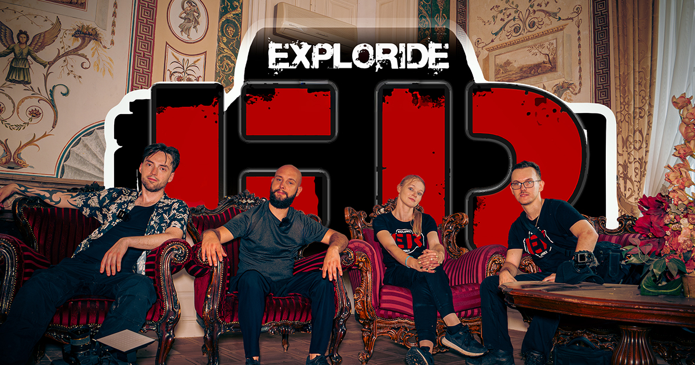

O nas

ExploRide to projekt tworzony z pasji do odkrywania miejsc, poznawania świata i opowiadania historii.
Łączymy urbex, podróże, historię oraz relacjonowanie wydarzeń związanych z eksploracją i turystyką. Pokazujemy opuszczone budynki, dawne fabryki, schrony i zapomniane wille, ale również ciekawe miejsca, niezwykłe krajobrazy, atrakcje turystyczne oraz mniej oczywiste zakątki, które odkrywamy podczas naszych podróży.
Dokumentujemy także wydarzenia związane z urbexem, podróżami i turystyką – odwiedzamy festiwale, targi, wystawy, spotkania oraz inne inicjatywy skupiające ludzi dzielących podobne pasje.
Celem ExploRide jest zachowanie śladów przeszłości, zanim całkowicie znikną. Każda eksploracja to dla nas nie tylko zdjęcia i filmy, ale również historie ludzi, miejsc i wydarzeń ukryte w murach i krajobrazie. Podczas podróży staramy się pokazywać zarówno znane atrakcje, jak i miejsca znajdujące się poza utartym szlakiem.
Naszą twórczość – filmy, zdjęcia i relacje – znajdziesz na YouTube, Facebooku, Instagramie i TikToku, gdzie regularnie dzielimy się kolejnymi eksploracjami, podróżami, wydarzeniami i przygodami.
Wierzymy, że dzięki fotografii i filmom możemy nie tylko zachować pamięć o miejscach, które z czasem znikają z mapy, ale również inspirować do odkrywania świata, poznawania jego historii i patrzenia na niego z innej perspektywy.